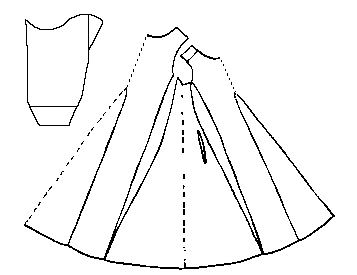

Pattern drawing based on N�rlundThis longsleeved garment is probably a man's, based on sleeve length and distance of the pocket slit from the bottom hem, which indicates that it probably only reached mid-calf. It is a front and back piece with two gores set in the front and in the back a double sized gore with a false seam running up the center. On the left side are two gores running from the hem to the sleeve opening. This is matched on the right side by a double wide gore with a false seam running down the center.
The circumference of the garment at the waist is 98 cm (38.6"), while at the hem it is 342 cm (134.6"). The back piece is 10 cm (3.9") longer than the front (125cm (49") as opposed to 115 cm (45"), although it is unclear whether this is a sylistic effect, or is a modification based on the needs of the original owner. The side gores run from 10 cm (3.9") to 83 cm (32.7").
The neck opening is 83 cm (32.7") in circumference. The armhole is 45 cm (17.7") around. The sleeves are narrow, 17 cm (6.7") around at the wrist, and there is a cut from the wrist 13 cm (5") up the arm. These seem to have been sewn shut when the garment was worn (Rather than, say, being buttoned). The sleeves are 56.5 cm (22.2") long. The wrists are hemmed.
On each side, in front of the side gores, is a pocket-slit opening begining 55 cm (21.7") from the bottom hem and extending upwards another 16 cm (6.3").
The neck opening and the pocket slits edged with a thin, plaited cord [6-ply]. The bottom hem is edged in a simple 2-ply cording sewn on with an overcasting stitch. The raw edge of the sleeve cut is overcast, and decorated with a simple backstitching. The sleeve ends are hemmed.
The cloth is a heavy fourshaft twill. The warp is black, the weft is brown.